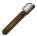
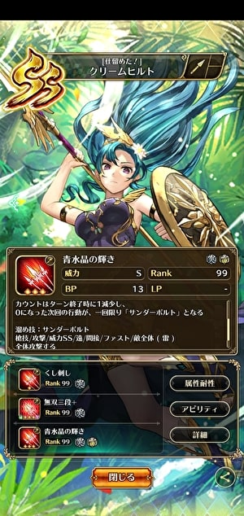
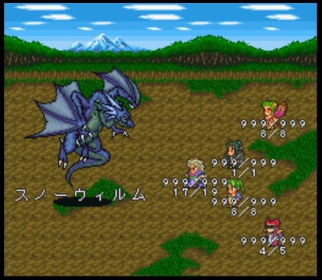
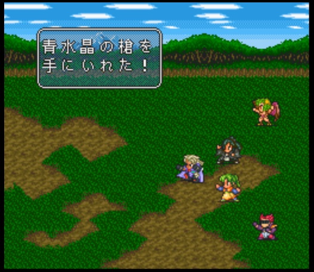
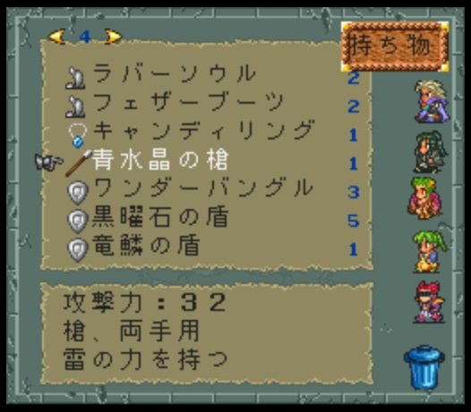
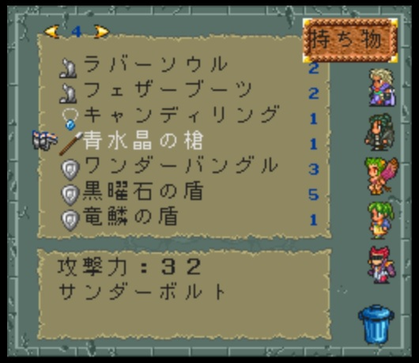

青水晶の槍
はじめに
2022年1月にロマサガRSでクリームヒルトというスタイルが実装されました。
【新スタイル紹介】
— ロマンシング サガ リ・ユニバース公式 (@romasaga_rs) January 23, 2022
クリームヒルト（『ロマンシング サガ２』より）
上からの奇襲。アマゾネスの得意な戦法よ。
小道に細かい罠を仕掛けて注意を足下に向けるの。
今頃上を向いても遅いのよ。サヨナラ。#新ロマサガRS#ロマサガRS祝3周年 pic.twitter.com/vgCWe23FZW
このキャラは「青水晶の輝き」という技を持っており、追撃でサンダーボルトを発動する技でしたね。

以下の動画のようなエフェクトです。
サンダーボルトは原作ロマサガ2では青水晶の槍の固有技なので、青水晶の槍について以下に書いていきます。
どうやって手に入れる？
沈没船にあります。沈没船のマップはこちら。
また、スノーウィルムが稀に落とすこともあります。


どんな武器？
槍。攻撃力は32。固有技のサンダーボルトを覚えることができます。


固有技のサンダーボルト
青水晶の槍は固有技のサンダーボルトを覚えることができます。以下の動画のようなエフェクトです。
原作ロマサガ2では、サンダーボルトはちょっと特殊な仕様でした。それについてちょっと解説してみます。
サンダーボルトのダメージ計算
サンダーボルトは槍技ですが、ダメージ計算は冥術以外の術と同じです。
以下、カエル研究所より引用。
- ダメージ = [術威力 × 効果値 × 威力 ÷ 4] + 誤差 - 防御 × 5
- 術威力 = 魔力 + MAX(魔力 - 冥力, 0) × 2
「効果値」は技・術のレベルに依存した値です。サンダーボルトの場合は槍の技レベルに依存しています。細かい計算式はカエル研究所の効果値についてを参照してください。
サンダーボルトの威力は5で、月影と同じです。攻撃属性は雷です。術威力に依存していますが、消費するのは技ポイントなので、術士に使わせれば術ポイントを温存することができます。
以下の動画で槍のレベルに応じて威力がどれだけ変わるのかを検証してみました。
槍のレベルを上げるのが大変ではありますが、これだけダメージが出れば結構使いどころあると思います。
最終皇帝であれば自然と槍レベル上がってると思うので使いこなせるかもしれませんね。最終皇帝は特に女の方が術威力が高いです。また、帝国猟兵（女）のイザベラやモール族のラトが突（槍・小剣）の技能を持っていて、術威力も宮廷魔術士並みに高いので、このキャラに使わせるのもありかもしれません。使ったことない方は是非使ってみてください。
参考